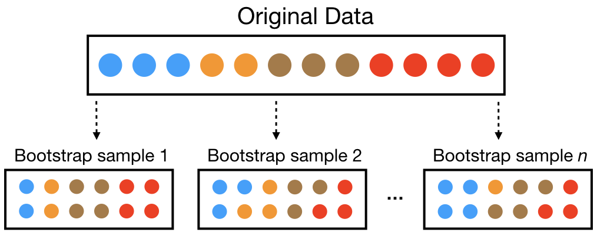

Bagging
Overview of Bagging and Decision Trees
As we discussed previously, a limitation of standard decision trees is their high variance. This means that small changes in the training data can lead to significantly different tree structures, which can result in overfitting and poor generalization to new data.
Bagging, or Bootstrap Aggregating, is an ensemble learning technique designed to reduce the variance of high-variance models like decision trees.
The core idea behind bagging is to create multiple versions of a predictor (in this case, decision trees) and use these to get an aggregated predictor.
What is Bootstrapping?
Bootstrapping is a statistical method that involves resampling with replacement from a dataset to create multiple “bootstrap” samples.
Each bootstrap sample is of the same size as the original dataset but may contain duplicate observations due to the sampling with replacement.
insert image of bootstrapping here

Since samples are drawn with replacement, each bootstrap sample is likely to contain duplicate values.
In fact, on average, \(63.21\%\) of the original sample ends up in any particular bootstrap sample.
The original observations not contained in a particular bootstrap sample are considered out-of-bag (OOB).
When bootstrapping, a model can be built on the selected samples and validated on the OOB samples; this is often done, for example, in random forests (see Chapter 11).
Boostrapping Example
Consider a dataset with 12 observations.
The original dataset might look like this:
| ID | StudyHours | Attendance | Passed |
|---|---|---|---|
| 1 | 2.0 | Low | No |
| 2 | 3.5 | Low | No |
| 3 | 4.0 | Low | No |
| 4 | 4.5 | Med | No |
| 5 | 5.0 | Med | No |
| 6 | 5.5 | Med | Yes |
| 7 | 6.0 | Med | Yes |
| 8 | 6.5 | High | Yes |
| 9 | 7.0 | High | Yes |
| 10 | 7.5 | High | Yes |
| 11 | 8.0 | High | Yes |
| 12 | 8.5 | High | Yes |
A bootstrap sample might look like this:
| ID | StudyHours | Attendance | Passed |
|---|---|---|---|
| 3 | 4.0 | Low | No |
| 5 | 5.0 | Med | No |
| 7 | 6.0 | Med | Yes |
| 2 | 3.5 | Low | No |
| 9 | 7.0 | High | Yes |
| 12 | 8.5 | High | Yes |
| 1 | 2.0 | Low | No |
| 6 | 5.5 | Med | Yes |
| 4 | 4.5 | Med | No |
| 8 | 6.5 | High | Yes |
| 10 | 7.5 | High | Yes |
| 3 | 4.0 | Low | No |
In this example, the bootstrap sample includes some observations multiple times (e.g., ID 3 appears twice), while others (e.g., ID 11) are not included at all. The observations not included in the bootstrap sample (IDs 11) are considered out-of-bag (OOB) samples.
Why Use Bootstrapping with Decision Trees?
Bootstrapping helps to create diverse training datasets for building multiple decision trees. Each tree is trained on a different bootstrap sample, which introduces variability among the trees.
When predictions are made, the results from all the trees are aggregated (e.g., by majority voting for classification or averaging for regression). This aggregation helps to smooth out the predictions and reduce the overall variance of the model.
Bagging in R
Let’s return to our example predicting whether a student likes to use big words based on their personality features.
Let’s see how our original decision tree worked.
# Make predictions on the test set
pred_class <- predict(cv_model_1, data_test)
# create confusion matrix
caret::confusionMatrix(
data = relevel(pred_class, ref = "1"),
reference = relevel(data_test[,"OPN8"], ref = "1")
)Confusion Matrix and Statistics
Reference
Prediction 1 0
1 87 32
0 46 136
Accuracy : 0.7409
95% CI : (0.6875, 0.7894)
No Information Rate : 0.5581
P-Value [Acc > NIR] : 4.129e-11
Kappa : 0.4688
Mcnemar's Test P-Value : 0.141
Sensitivity : 0.6541
Specificity : 0.8095
Pos Pred Value : 0.7311
Neg Pred Value : 0.7473
Prevalence : 0.4419
Detection Rate : 0.2890
Detection Prevalence : 0.3953
Balanced Accuracy : 0.7318
'Positive' Class : 1
Now, let’s implement bagging using the caret and ipred packages in R.
# make bootstrapping reproducible
set.seed(123)
# train bagged model
cv_bag1 <- bagging(
formula = OPN8 ~ .,
data = data_train,
nbagg = 100,
coob = TRUE,
control = rpart.control(minsplit = 2, cp = 0)
)Let’s look at the model summary and the prediction error. Compared to our non-bagged model we can see the bagged model has a lower prediction error.
# Make predictions on the test set
pred_class <- predict(cv_bag1, data_test)
# create confusion matrix
caret::confusionMatrix(
data = relevel(pred_class, ref = "1"),
reference = relevel(data_test[,"OPN8"], ref = "1")
)Confusion Matrix and Statistics
Reference
Prediction 1 0
1 100 35
0 33 133
Accuracy : 0.7741
95% CI : (0.7226, 0.8201)
No Information Rate : 0.5581
P-Value [Acc > NIR] : 4.468e-15
Kappa : 0.5427
Mcnemar's Test P-Value : 0.9035
Sensitivity : 0.7519
Specificity : 0.7917
Pos Pred Value : 0.7407
Neg Pred Value : 0.8012
Prevalence : 0.4419
Detection Rate : 0.3322
Detection Prevalence : 0.4485
Balanced Accuracy : 0.7718
'Positive' Class : 1
Code for In-Class Activity
dat <- data.frame(
ID = 1:12,
StudyHours = c(2.0, 3.5, 4.0, 4.5, 5.0, 5.5, 6.0, 6.5, 7.0, 7.5, 8.0, 8.5),
Attendance = c("Low","Low","Low","Med","Med","Med","Med","High","High","High","High","High"),
Passed = c("No","No","No","No","No","Yes","Yes","Yes","Yes","Yes","Yes","Yes")
)
fit_stump <- function(d) {
ord <- d[order(d$StudyHours), ]
mids <- zoo::rollmean(unique(ord$StudyHours), 2) # candidate thresholds
if (length(mids) == 0) mids <- ord$StudyHours[1]
best <- data.frame(tau = NA, err = Inf)
for (tau in c(mids - 1e-8, mids + 1e-8)) { # break ties cleanly
pred <- ifelse(ord$StudyHours >= tau, "Yes", "No")
err <- mean(pred != ord$Passed)
if (err < best$err) best <- data.frame(tau = tau, err = err)
}
best$tau
}
B <- 1000
taus <- numeric(B)
oob_acc <- numeric(B)
for (b in 1:B) {
idx <- sample(nrow(dat), replace = TRUE)
boot <- dat[idx, ]
taus[b] <- fit_stump(boot)
# out-of-bag set and accuracy for model b
oob <- dat[-unique(idx), , drop = FALSE]
if (nrow(oob) == 0) { oob_acc[b] <- NA; next }
pred <- ifelse(oob$StudyHours >= taus[b], "Yes", "No")
oob_acc[b] <- mean(pred == oob$Passed)
}
# Aggregated (bagged) decision rule = majority vote over grid
grid <- data.frame(StudyHours = seq(2.5, 8.5, by = 0.5))
votes_yes <- sapply(grid$StudyHours, function(x) mean(x >= taus))
bagged_class <- ifelse(votes_yes >= 0.5, "Yes", "No")
list(
mean_OOB_accuracy = mean(oob_acc, na.rm = TRUE),
grid = cbind(grid, votes_yes = round(votes_yes, 3), bagged_class = bagged_class)
)$mean_OOB_accuracy
[1] 0.9088167
$grid
StudyHours votes_yes bagged_class
1 2.5 0.000 No
2 3.0 0.000 No
3 3.5 0.000 No
4 4.0 0.009 No
5 4.5 0.023 No
6 5.0 0.275 No
7 5.5 0.931 Yes
8 6.0 0.993 Yes
9 6.5 1.000 Yes
10 7.0 1.000 Yes
11 7.5 1.000 Yes
12 8.0 1.000 Yes
13 8.5 1.000 Yes